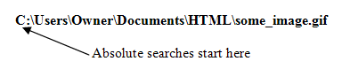
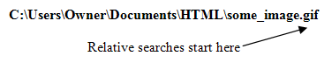
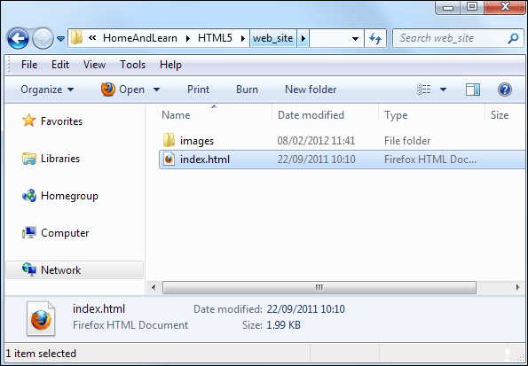

Inserting images into a web page
So you have your image file, either a GIF file or a JPEG. How do you get it into a web page? You do so with the IMG tag in HTML. The basic IMG tag looks like this:
<IMG SRC="some_image.gif">
There are no closing tags for the IMG tag. So you don't do this:
<IMG SRC="some_image.gif"></IMG>
In between a pair of angle brackets, you type the letters IMG (short for image, of course). After a space, you type SRC. This stands for Source and means the location of your image. After an equals sign, you type the name of your image between a pair of double quotes.
It's essential that you get the SRC part right, though. To do that, you need to know about Absolute versus Relative file referencing.
Absolute Referencing
Take a look at this file reference:
C:\Users\Owner\Documents\HTML\some_image.gif
Starting from the right-hand side, this says that there is an image called some_image.gif. This has been saved into a folder called HTML. The HTML folder is in the Documents folder. The Documents folder is in a folder called Owner. The Owner folder is in a folder called Users, which is on the C drive. This is an Absolute file reference. It points to a specific location on your C drive.
This would be no good on the internet, however. Although you will have all these folders on your C drive, somebody else viewing your web page won't. But that person's browser will try to look for all these folders. Of course it won't be able to find them, because all the folders are on your computer, and not theirs. So the image you specified to use in your web page won't be displayed to anybody else but you.
Another example of an Absolute References is this:
http://www.homeandlearn.co.uk
That's an absolute reference to a web page on the internet. Perfectly OK, and you'll see how to add links to web pages later. But Absolute References and not terribly practical when it comes to you own images and your own html pages. Relative References are much better.
Relative Referencing
With Relative Referencing, the starting point is not your own computer, but the image file or HTML file itself. With Absolute Referencing, the browser starts the search for the image on the left hand side:

With Relative Referencing, the browser starts the search for the image on the right hand side:

So with a Relative reference, the browser starts looking for a file called "some_image.gif". If you just put this:
<IMG SRC="some_image.gif">
the browser will look for the file in the same folder where you saved your web page. If it's there, no problem; the browser will display the image. You don't need to add anything else, because the browser will stop searching when the image has been found. In fact, the ONLY place the browser will look is in the same folder where you saved your web page.
So with Relative Referencing, if you put all your images and web pages in the same folder, the browser will know where to find everything. And when you're asking the browser to display an image or another web page, you only need the name of the image or web page. You don't need to do this:
<IMG SRC=" C:\Users\Owner\Documents\HTML\some_image.gif">
You can just do this:
<IMG SRC="some_image.gif">
On a professional level, though, dumping everything into one folder is frowned upon. If you created a folder called "web_site" you would be expected to create other folders inside this one. A folder called "images" to store all your image files; a folder called "scripts" to store any external code; and a few other folders as well.
If you do that, Relative Referencing gets a little bit trickier. For example,
suppose you have a web page called index.html. You've place this web
page inside of a folder called web_site. You've created another folder
inside of your web_site folder. You've called this new folder images.
So your file and folder structure looks like this:

Of course, you will have placed all of your images in the images folder. Now, if you want one of those images on the index.html page, you couldn't do this:
<IMG SRC="some_image.gif">
If you tried that, the image wouldn't display. That's because you haven't told the browser about that folder called images. You would have to do this:
<IMG SRC="images/some_image.gif">
The forward slash means "look for a folder called . . . that is in the same folder as the current file." In this case, look for a folder called "images". (The current file is index.html, which is where you want the image to appear.)
If you wanted to point to an image that was outside the "web_site" folder, then life just got even trickier still. (You'll see how to solve this later). But as a beginner, if you keep everything in the same folder - images and web pages - then this sort of relative referencing should work:
<IMG SRC="some_image.gif">
In case all this file referencing is not too clear, we'll do some practical
work in the next section. (We've produced a video about file referencing, here:
File Referencing Video.)